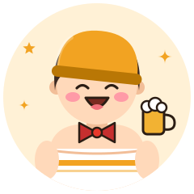
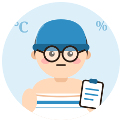

- H高温ガッツリ
- A外気浴派
- Tみんなでサウナ
- F気まま・直感
宴のホスト
The Party Starter
熱くなって、風に当たって、乾杯まで一直線
熱さを仲間と分かち合う
盛り上げ隊タイプとにかく楽しむのが信条。サウナ室ではトークも弾み、外気浴では笑顔、最後はサウナ飯で締めます。
強み
- 明るい
- 誰とでも仲良くなる
- 楽しむ天才
気をつけたいこと
- 飲酒前後の入浴は危険。お酒はサウナの後、水分補給の後に
相性のいいタイプ

データと理論で、ととのいを解き明かす
勢いで盛り上がる宴を、博士の知識が安心して楽しめる土台にしてくれる。
おすすめのサウナ
サウナ飯が名物の銭湯・スパ
- noSauna 神奈川県 小田原 宿泊・アウトドア
森の中で味わうテントサウナ薪ストーブのテントサウナでセルフロウリュができ、森の中のチェアで外気浴。水風呂の代わりに渓流を使う 公式サイト地図で見る - 嘉島湯元水春 熊本県 嘉島町 スパ・健康ランド
オートロウリュと外気浴チェアが揃う温泉オートロウリュのサウナ、15℃前後の水風呂、露天のととのい椅子 公式サイト地図で見る - 草加健康センター 埼玉県 草加 スパ・健康ランド
熱波イベントが盛り上がる大型施設ロウリュやアウフグースなどのイベントが豊富 地図で見る
※ 営業状況・料金・利用条件は変わることがあります。訪問前に公式情報をご確認ください。
あなたのタイプは？
宴のホストは、サウナの好みで分かれる16タイプのひとつです。質問に答えるだけで、あなたの「ととのい方」がわかります（無料・登録不要・約3分）。
ほかのタイプ
※ 娯楽目的の診断です。サウナは体調に合わせて無理せず、水分補給をしてお楽しみください。